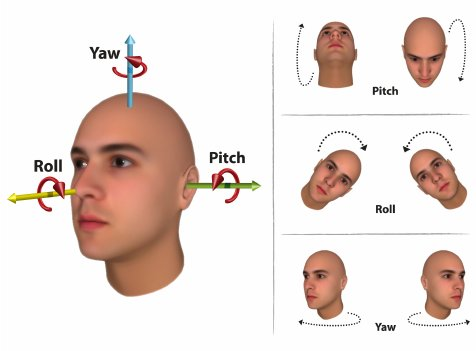
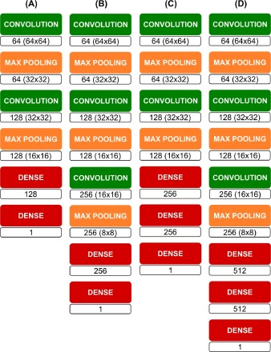

Abstract Tutorial
If you ever want to add head pose estimation feature to your application. You would like to use a reliable trained model to estimate the head poses of a set of images. This tutorial is prepared for you. I will present detailed steps on how to load and use the Deepgaze head pose estimator model.
Model Constraints
The head pose estimator model from deepgaze has the following constraints:
- 1. The images passed to the model should be colored images (having three channels).
- 2. The images passed to the model should be of size 64× 64 pixels or higher.
Installation and Prerequisites
To have the head pose estimator model working on your machine, you must install:
- 1. Install Python2.7.
- 2. Install Pip.
- 3. Install Numpy.
- 4. Install OpenCV 2.0.
For training and model enhancing purposes, you need to install the following:
1. TensorFlow library.
Guide through the Model
Now, after you have all the necessary packages installed.
- 1. Go to the Deepgaze GitHub repository.
- 2. Clone or download the following files:
- a. Deepgaze/deepgaze/cnn_head_pose_estimation.py
- b. Deepgaze/etc/tensorflow/head_pose/ALL THE FILES
- c. Deepgaze/examples/ex_cnn_head_pose_estimation_images/ALL THE FILES
The cnn_head_pose_estimation.py file contains the head pose estimator model, that you will be using to predict head poses of your different images, under CnnHeadPoseEstimator class. All the pre-trained model files that are used in the above model are stored in Deepgaze/etc/ternsorflow/head_pose directory. ex_cnn_head_pose_estimation_images.py under Deepgaze/examples/ex_cnn_head_pose_estimation_images directory provides you with the way to use the head pose estimator model to predict some sample images in the same directory.
Detailed Tutorial
Head Pose Estimation
In the last few years, many improvements and advancements occur in Augmented Reality and Virtual Reality. Head Pose Estimation is an important part of that enhancements. Head pose estimation means predicting the pose of the human head; it is estimating if the person is looking upwards, downwards, right or left. Precisely, a good head pose estimator can estimate accurate roll, pitch and yaw angles of the face. This is useful for player navigation through a VR application or a smart pdf reader application.
Convolutional Neural Network
Artificial Neural Networks (NN) are meant to imitate the behavior of the human neural networks. Convolution Neural Networks (CNN) is one type of NN that uses special mathematical operation: Convolution. CNN are used to deal with image related problems like image classification and head pose estimation. CNN has two main parts: feature extraction where convolution layers are used and classification part where the fully connected layers are responsible. Convolutional layers use filters(masks) that pass over the input images to merge their values with the filter values and produce feature maps. Those feature maps are then passed to the fully connected layers to do the classification and produce the prediction as an output layer.

TensorFlow
In this tutorial, we are going to use TensorFlow software library to understand and enhance deepgaze model. TensorFlow is an open source software library that provides high performance numerical computations. It is suitable to implement machine learning and deep learning models. It runs on many platforms (CPUs, GPUs, TPUs).
Deepgaze
Deepgaze is a Human-Computer Interaction library that includes useful models for head pose estimation, face detection, color and skin detection, motion tracking, motion detection, Histogram-based classification and saliency maps. The main focus of this tutorial is the deepgaze head pose estimation model. In fact, deepgaze has two head pose estimator; one using CNN and another using Perspective-n-Point (PNP). We will focus our attention on the CNN head Pose Estimator. The CNN head pose estimator model was constructed from two CNNs of type B as shown in the figure below.The first CNN estimates the Yaw angle while the other CNN estimates the Pitch angle. The output size of each layer is shown in figure 3. Different CNN architectures were tested before to choose this architecture as the most accurate and robust model.
The model was trained on Annotated Facial Landmarks in the Wild (AFLW) dataset. AFLW consists of 25k colored real-world face images gathered from the web. The images are various and captured under different conditions. The dataset includes female and male face images and different face poses from a variety of ages. The images are labeled with 21 landmarks per image. The mean Absolute error (MAE) and the Standard Deviation (STD) were the metrics used to test the accuracy of the head pose estimator model. The same metrics were also used to test the model across other datasets later in this project.
Testing Deepgaze Head Pose Estimator
After successfully installing the model and having it running, it is time to test the model with external images and different datasets. For that purpose, with the help of deepgaze packages I wrote two testing scripts. You can access the scripts via my GitHub repository The first script allows the user to estimate the Head Pose angles (Yaw, Pitch, and Roll) of any image. The image should be pre-proceeded before passing it to the estimator. The image should be colored, of size 64*64 or higher, and contains the face only. For that, image cropping and resizing are performed first, then the resulted image is passed to the head pose estimators to end up with the Yaw, Pitch and Roll predictions. Finally, the results are visualized with lines drawn on the face. The second script is for testing the deepgaze CNN head Pose Estimator on different datasets. For this tutorial, I used Prima Dataset to evaluate the model. I used ex_prima_parser.py deepgaze package to parse, crop and prepare the ground truth labels for testing. After that, the prepared data should be passed to the head pose estimators to compare the prediction results with the ground truth labels. The mean Absolute Error should be used as the accuracy metric for evaluation.
More details and examples about the testing script are avaliable in my GitHub